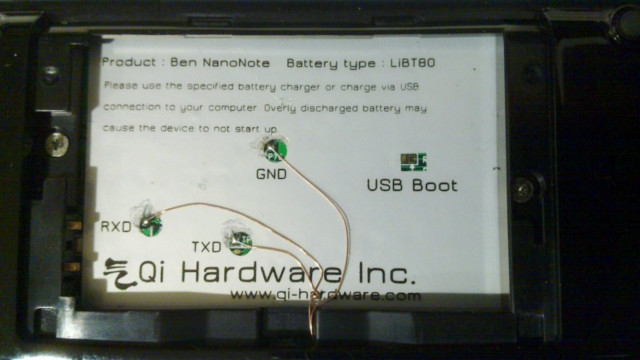

參考資訊：
https://github.com/steward-fu/website/releases/tag/nanonote
Software USBBoot
1. Plugin USB Cable into PC
2. U + Reset(直到燒錄完成)
$ cd $ wget https://github.com/steward-fu/website/releases/download/nanonote/openwrt-xburst-qi_lb60-u-boot.bin $ wget https://github.com/steward-fu/website/releases/download/nanonote/openwrt-xburst-qi_lb60-uImage.bin $ wget https://github.com/steward-fu/website/releases/download/nanonote/openwrt-xburst-qi_lb60-root.ubi.bz2 $ bzip2 -d openwrt-xburst-qi_lb60-root.ubi.bz2 $ sudo apt-get install libconfuse0 $ sudo usbboot -c "boot;nerase 0 4096 0 0" $ sudo usbboot -c "boot;nprog 0 openwrt-xburst-qi_lb60-u-boot.bin 0 0 -n" $ sudo usbboot -c "boot;nprog 1024 openwrt-xburst-qi_lb60-uImage.bin 0 0 -n" $ sudo usbboot -c "boot;nprog 2048 openwrt-xburst-qi_lb60-root.ubi 0 0 -n"
Hardware USBBoot
1. Short USBBoot(直到燒錄完成)
2. Plugin USB cable into PC

$ cd $ wget https://github.com/steward-fu/website/releases/download/nanonote/openwrt-xburst-qi_lb60-u-boot.bin $ wget https://github.com/steward-fu/website/releases/download/nanonote/openwrt-xburst-qi_lb60-uImage.bin $ wget https://github.com/steward-fu/website/releases/download/nanonote/openwrt-xburst-qi_lb60-root.ubi.bz2 $ bzip2 -d openwrt-xburst-qi_lb60-root.ubi.bz2 $ sudo apt-get install libconfuse0 $ sudo usbboot -c "boot;nerase 0 4096 0 0" $ sudo usbboot -c "boot;nprog 0 openwrt-xburst-qi_lb60-u-boot.bin 0 0 -n" $ sudo usbboot -c "boot;nprog 1024 openwrt-xburst-qi_lb60-uImage.bin 0 0 -n" $ sudo usbboot -c "boot;nprog 2048 openwrt-xburst-qi_lb60-root.ubi 0 0 -n"